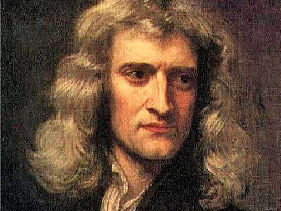

Isaac Newton
História

Sir Isaac Newton foi um físico, astrônomo e matemático inglês. Nasceu em 4 de janeiro de 1643, em Woolsthorpe-by-Colsterworth, uma pequena vila na Inglaterra. Ele foi batizado como homônimo de seu pai, que morreu poucos meses antes de seu nascimento. Quando sua mãe, Hannah Ayscouhn Newton, se casou novamente e se mudou para outra cidade, onde ficou aos cuidados de sua avó. Quando o padrasto morreu, ele voltou para a mãe e foi incentivado a cuidar das terras da família. No entanto, ele não demonstrou capacidade para realizar essa tarefa. Em 1661, ingressou no Trinity College, na Universidade de Cambridge. Embora o currículo de Cambridge fosse baseado na filosofia de Aristóteles, Newton dedicou-se ao estudo de vários escritores associados à filosofia mecânica. Ele leu os Diálogos de Galileu Galilei, as obras filosóficas de Descartes, estudou as leis dos sistemas planetários de Kepler e as obras de muitos outros autores. Em 1665, graduou-se como bacharel em humanidades.
No mesmo ano, a Grã-Bretanha foi duramente atingida pela peste e algumas instituições, incluindo a Universidade de Cambridge, foram fechadas. Como resultado, Newton foi forçado a voltar para a casa da fazenda. Durante esse período de isolamento, ele teve a oportunidade de buscar soluções para todas as questões que começou a levantar enquanto estudava em Cambridge. Nessa época desenvolveu o método das séries infinitas (binomial de Newton) e os fundamentos do cálculo diferencial e integral. Ele conduziu experimentos com prismas, o que o levou à sua teoria da cor e ao desenvolvimento de telescópios refletores. Ele também estudou o movimento circular e analisou as forças associadas a esse movimento. Ele aplicou esta análise ao movimento da Lua e dos planetas em relação ao Sol. Isso formará a base da lei da gravidade universal.